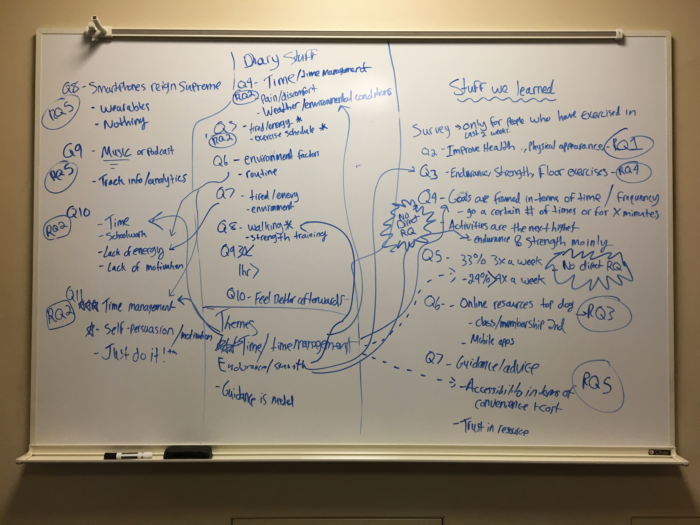
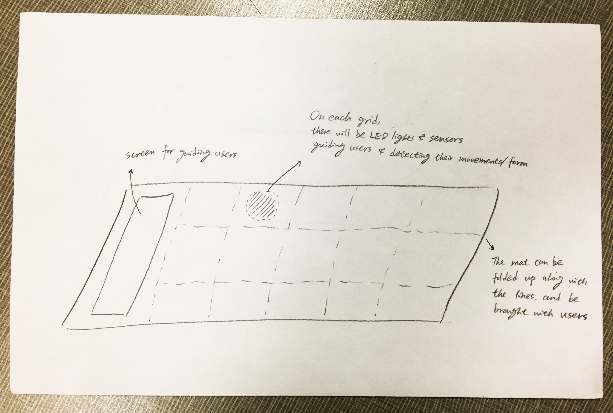
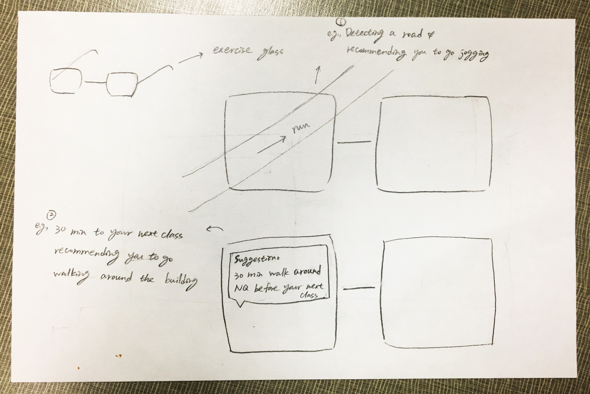
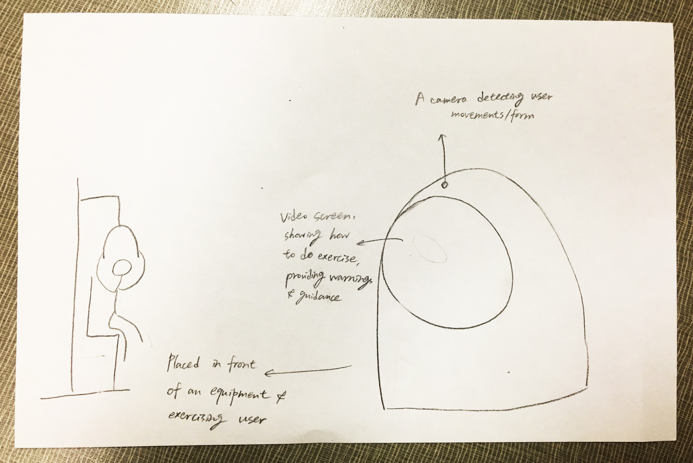

Milestone 2
Summary
In order to learn more about our target audience and the problem scope we conducted further in-depth research through a diary study and a survey.
Target Audience:
University Students
Problem Scope:
An exercise tool for college students that focuses on time management, endurance/strength, and providing instructional guidance in order to improve frequency and safety.
Introduction
For milestone 1 we targeted off-campus college students and focused on health-related reminders. We did some preliminary observations at local gyms and dining areas to get a better understanding of the target audience. We focused on these areas because we understand that exercise is an important facet of healthy living and the target audience was very accessible.
Continuing from milestone 1 we chose to run a brief diary study and a survey to understand our audience better. This process uncovered a wealth of new information that lead us back to the drawing board and refine our scope. From this new refined scope we took the time to discuss and ideate on three potential solutions to our new scope.
Study Design
For our study, we focused on running a survey and diary study. First, we constructed 5 research questions that we wanted to learn from our target audience. These research questions served as a backbone to the rest of our study and helped us develop questions and ideas throughout the process.
Research Questions
- RQ1: What motivates the target audience to exercise?
- RQ2: What factors prevent target from exercising?
- RQ3: How does target audience learn how to exercise?
- RQ4: What kind of exercises does our target audience actually do?
- RQ5: What resources does our target audience use to enable their exercise?
After defining our research questions we then narrowed down what questions would be best for each research method. For the survey we focused on research questions 3, 4 and 5. For the diary we focused on research questions 1, 2 and 4. Research question 4 double-dips into both methods because it easily fit into both methods and getting validation from both methods would strengthen the overall results. This was an important step to do prior to starting the survey and diary because it made sure our research methods were productive, efficient, and reached our goal of solving the problem.
Survey
As previously mentioned, for the survey we focused on answering research questions 3, 4 and 5. We wrote a simple survey with about 16 questions. After creating the survey we distributed the survey on multiple channels. The first channel we sent out our survey is through the UMSI list serve. After this, we distributed it on 5 college forums on the popular social media website, Reddit. The 5 college schools were: University of California at Berkeley, University of Illinois at Urbana-Champaign, University of Central Florida, Georgia Institute of Technology, and University of Michigan. During our recruiting, we indicated that taking the survey will enroll them into a raffle if they wished to leave their email at the end. After 5 days we cut off data collection with 176 responses. For the preliminary demographic results of the survey, 142 responses marked that they exercised in the past 2 weeks of taking the survey. About 49% were female, 47% were male and ~3% didn’t disclose or were nonbinary.
Diary Study
For our diary study we chose to reach out to our social networks and recruit 3 people to take our diary study for 6 days. We informed the participants that there will be a monetary gift card awarded for completion of the diary study. The goal of the diary study was to gain insight into the day-to-day exercise motivations and barriers that our participants faced (Research Questions 1 and 2). In particular, we were hoping to gain insight into novel barrier situations that would not have occurred to us to include in our survey. Results from the diary study were analyzed with a light affinity wall analysis to pull out the key concepts, and then were organized against the research questions, pairing them with the corresponding survey results for each question.
Survey Result
We had a rough mapping of survey and diary questions relative to their corresponding research question. We formalized this mapping during our post-survey analysis, directly relating the results of each study question back to a core research question. By having this mapping viewable on a whiteboard as a whole, we were also able to see patterns between the different activities and questions, which lead us to the three core insights we used as the basis for Milestone 2 Ideation.
Here are the results of our mapping, broken down by Research Question:
RQ1 - What motivates the target audience to exercise? Findings:
RQ 1 Survey Findings:
The survey revealed that for general motivation, our target audience is focused primarily on maintaining their health and physical appearance (Figure 1). Weight loss, physical strength building, activity enjoyment, and a sense of accomplishment were also top goals. Regarding exercise goals, the survey found that the target audience framed their personal exercise goals in terms of time more than any other factor. Frequency goals (X times a week) were the primary framing within this category, though duration goals were much in evidence as well. Beyond the time component, the next major framing for personal goals were based on endurance activities (Running, jogging, etc), and strength training activities.
RQ1 Diary Findings:
Our diary questions also examined the target audience's motivations. What we found was that at the daily level, motivations were often affected by convenience and environment. Participants mentioned cold weather, time of day visibility, and being able to work in exercise into routines (such as a walking route from a parking garage) as factors that affect day-to-day motivation. One final note, brought by Diary Question 10, is that all of our diary participants did feel positively about actually achieving their daily goals, which may be a factor in continued motivation to exercise.

RQ2 - What factors prevent target audience from exercising? Findings:
RQ2 Survey Findings:
The survey revealed that the primary barrier to exercise for our target audience is a lack of time (Figure 2). Lack of energy(fatigue), and the schoolwork needs of university were also isolated as potent barriers. The survey also revealed that to overcome exercise activity barriers, the target audience commonly used time management strategies, and internal self-reflection/motivation as primary strategies to overcome their exercise barrier challenges.

RQ2 Diary Findings:
Our diary study also explored barriers to exercise. Time constraints and fatigue were both mentioned by our diary participants, dovetailing with our survey results. In addition to these factors, environmental factors such as temperature and time of day also affected, and in some cases, prevented our participants from exercising.
RQ3 - How does target audience learn how to exercise? Findings:
RQ3 Survey Findings:
The survey revealed that the primary barrier to exercise for our target audience is a lack of time (Figure 2). Lack of energy(fatigue), and the schoolwork needs of university were also isolated as potent barriers. The survey also revealed that to overcome exercise activity barriers, the target audience commonly used time management strategies, and internal self-reflection/motivation as primary strategies to overcome their exercise barrier challenges.

RQ3 Diary Findings:
Research question 3 was not explored by the diary study, therefore there is no data associated with it.
RQ4 - What kind of exercises does our target audience actually do? Findings:
RQ4 Survey Results:
Our survey revealed that Endurance exercises (running, biking, etc) is the most common form of exercise in our target audiences, though strength exercise are a close second form. Additionally, floor exercises (pushups, situps) were also popular amongst respondents.
RQ4 Diary Findings:
Our diary participants revealed that the exercise they conducted during the diary study period were all from either the Endurance or Strength exercise categories. Some diary participants also revealed how long they spent on exercising, which was anywhere from 20 minutes to just over an hour.

RQ5 - What resources does our target audience use to enable their exercise? Findings:
RQ5 Survey Results:
This was one area where the survey results were extremely clear. Smartphones were by far the most common tool used by the target audience to enable their exercise. Dedicated fitness wearables were also mentioned, but the were a distant second to the smartphone use. The survey also revealed the main use for these resources, which was music/podcast listening, which was cited far more than any other reason. The next most numerous reason was for exercise/tracking purposes.

RQ5 Diary Findings:
Research question 5 was not explored by the diary study, therefore there is no data associated with it.
Refined scope
After running the research study and analyzing the data, we refined our scope and ideated on 3 new potential solutions.
Original Scope
Health related reminders for off-campus students.
Refined Scope
An exercise tool for college students that focuses on time management, endurance/strength, and providing instructional guidance in order to improve frequency and safety.
Target Audience
For our target audience, we refined it from off-campus students, to focus primarily on college students in general. We did this because we realized there isn’t much difference between the two and the focus was too narrow.
We are primarily focusing on college students that already exercise but we are not ruling out gaining new users with our solutions. We did this because from our study we learnt that time played a big in whether students exercised or not. Therefore we want to focus on a tool that can incorporate exercise in everyday activities. Our scope includes exercising either inside a gym or outside. This is important because our solutions focus on aiding the students in improving exercise frequency.
Ideation and Selection
To create our new project proposals, we took all of the data we gathered from our diary studies and survey, and highlighted some of the key factors that appeared in both, or that had overwhelming numerical support in the survey. We managed to distill our survey and diary studies into 3 key factors.
Key Factors
- Lack of time/time management.
- Endurance and Strength exercises were the most prominent forms of exercise.
- Users often need guidance when doing exercises to learn how to do them correctly.
After this distillation, we began a second ideation phase where each group member would create new project concepts based on the information we learned; ideas were then shared, selected based on commonalities, and then fleshed out. We narrowed down to the three solutions based on feasibility and how close they aligned to the three key factors.
Refined Design Concepts
Project concept #1: Smart Exercise Mat
Our first project concept is the Smart Exercise Mat which is primarily designed to help people learn proper form when exercising, and also help them exercise in more convenient ways than having to go to a dedicated space for exercising (e.g. a gym). The mat features a display that will show users how to do specific exercises with the correct form, and also features LED lights that will show users where to place certain body parts for certain exercises. For example, the display will show someone how to do a push-up and then the mat itself will light up to show where your arms and feet are supposed to go. This project concept was created to address users need for guidance during exercise, and also to support the fact that floor exercises were among the most popular during our survey results.
Walkthrough: Exercise Mat
For the following concept, we are going to follow Bob. Bob is a busy college student currently majoring in public health, and an amateur when it comes to his physical fitness. To help him out with his workouts, he invested in a “Smart Exercise Mat” to help him learn proper form and get a more effective overall workout. After setting up his exercise mat, he turns it on a programs it for how to do push-ups. Upon doing this, the screen on the mat lights up and shows a silhouette of a person doing push-ups with the proper form of how to do them. Additionally, the mat starts to light up and show Bob exactly where he needs to put his hands and feet in order to execute the perfect pushup. Bob then aligns himself with the colored areas and behind to do push-ups while looking at the screen to verify that he is doing them correctly. He finishes them and then continues onto his next exercised, feeling great knowing that he was able to do them correctly.
Project concept #2: Life as a Gym
Our second project concept is called “Life as a Gym” which is designed to help users exercise anywhere and anytime. This concept involves creating AR glasses that have the ability to scan our everyday world as you go through it and recognize certain objects or structures which can provide good opportunities for quick, on the fly workouts. For example, if a user is wearing the glasses and they come across a staircase, they would recommend ways the user can interact with it to create a small workout in that immediate space. Additionally, the glasses will be integrated into a user’s schedule, daily routines, and will also track a users habits while they are wearing them. Using this integration, the glasses have the ability to offer suggestions on how to fit exercises into a users schedule given the context of their day. This project concept was created to address the fact that our target audience often suffers from having little to no time to exercise.
Walkthrough 2: Life as a Gym
For the second concept, we are looking at Amber. Amber is working on completing her physics degree, which leads her to have a busy lifestyle. Amber currently lives off campus and needs to commute to school everyday; she parks in the same parking lot and has to then walk 15 minutes to get to her classes. One day, Amber gets to campus 30 minutes early due to having no traffic on her trip in; she’s also wearing our “Life as a Gym” glasses which are synced up with her everyday schedule. The glasses detected that she arrived 30 minutes early, and they also know she has a 15 minute walk to her class from the parking lot. Because the glasses know that Amber’s class isn’t for another 40 minutes, they start highlighting objects as she passes where she could squeeze in a quick workout; including a large staircase that leads to the administrative building. As she looks at the stairs, the glasses start to create different ways she could do exercises on them, including increasing her pace as she climbs them, or by doing lunges up the stairs instead of walking. The glasses also suggest a nice detour that will help Amber walk more steps, but still make it to her class on-time. Amber decides to follow the classes and ends up having a nice workout in the middle of her day, without having to plan ahead or go to a dedicated space to work out. She loves that she no longer has to go to the gym and can spend the rest of her time now doing something more valuable.
Project concept #3: Smart Gesture Guide
Our last project concept is called the “Smart Gesture Guider,” which is designed to help our users learn proper form during their workouts. The guider is a camera equipped with sensors that observes a user during their workouts and tracks them to see if they are doing certain exercises correctly. When the guider detects incorrect form, it will start playing a video that shows a user how to do the correct form of the exercise they are attempting. For example, if a user is trying to do russian twists in front of the camera and has incorrect form while doing them, the camera will notice this, and then immediately find a video from a trusted source that shows how to perform them correctly without the user needing to interact with the system at all. The goal of this project is to address users need for proper guidance while completing exercises, while also keeping them totally immersed in the experience.
Walkthrough 3: Smart Gesture Guider
For the third concept, we are going to follow Tom. Tom is a master student majoring in literature who is eager to gain strength through workout. He is new to weight training and seldom use gym before, so he is currently having a hard time learning using equipments and ensuring that he is working correctly. A smart gesture guider that can be placed in front of him while doing exercise is super helpful for him. With the guidance provided, it is much easier for him to learn weight training and new equipments. Besides, through this assistance, he can know if he is doing well which help reduce the chances of getting hurt.
Shortcomings
Although our research questions were mostly answered in both research methods, we faced some problems throughout our process.
The first issue we faced was in the structure of the survey. For all the participants that marked that they didn’t exercise in the beginning, we didn’t have a follow up section on a reasoning why they didn’t exercise. This was a major conflict because if we had the question present in our survey we would’ve been able to get better understanding of the barriers that students don’t exercise.
Additionally, in our survey, we missed an opportunity to figure out the frequency of exercise of our target audience. Fortunately, we asked our diary study participants fill it out. Both of these issues could’ve been avoided if we had don’t a pilot study to test out our survey.
Next, due to the limited time and the limited scope, we were not entirely satisfied with the results from the diary study. We had wished we had more time to recruit, design and interview our diary study participants.
In future iterations, we wish to have additional time to design, research and, iterate to get more information on our target audience.
Conclusion
By the end of this milestone, we ended up with a far stronger sense of our problem space. We know we want to focus on the exercise component of health, which gives us a much more feasible problem space. We also have, based on our study results, 3 guiding design pillars of Exercise Time Management, Endurance/Strength Training, and Exercise Education Guidance to guide our further concept development.
We still need to explore the extent to which we can incorporate secondary study insights into our main designs. Which ones matter the most, and which ones are infeasible to incorporate. We also feel that we need to do more secondary research into our 3 new design concepts, to a) ensure that the concepts are unique, and b) understand better the actual science that will govern how effective they can be.